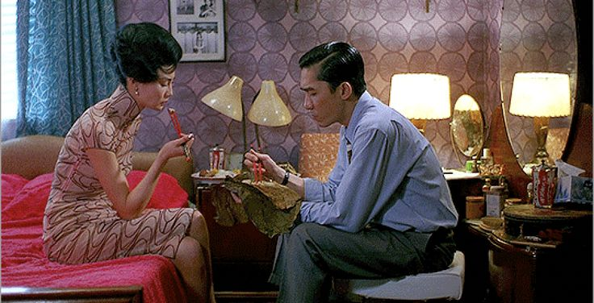

In the Mood for Love
A Love So Quiet It Echoes
Director: Wong Kar-wai
Year: 2000
Genre: Romantic Drama, Sad Silences, Cheating but make it classy
Mood: Soggy noodles, stolen glances, heartbreak in slow motion
"It's not a love story. It's a story about love. And curtains. Lots of curtains."
(if you know, you know)
🥢 Plot in a Chopstick Grip
Hong Kong, 1962. Two neighbors, Mr. Chow, who's a journalist with great ties, and Mrs. Chan, a secretary with better cheongsams, suspect their spouses are having an affair. Instead of confronting the cheaters, they embark on a beautifully restrained, emotionally devastating non-affair of their own.
They rehearse painful goodbyes that haven't happened yet. They write martial arts serials to pass the time. They eat a lot of noodles. And they fall in love but never really admit it.
It's not what they do. It's what they don't do that hurts the most.
Mrs. Chan and Mr. Chow spend a large part of the movie pretending, playing the roles of their cheating spouses to figure out how the affair started. But what begins as a script rehearsal slowly becomes their own story. The irony? They're roleplaying people who hurt them… while becoming people who hurt themselves.
This is emotional inception. And no, DiCaprio is nowhere in sight.

Late-night noodles, early heartbreaks
"We won't be like them."
💔
📸 Half-Glances & Hallways
"He remembers those vanished years... As though looking through a dusty window pane, the past is something he could see, but not touch."
⏳ THEME 1: The Tyranny of Time
This film isn't just set in 1962; it's trapped there. Wong Kar-wai plays with time like it's a sadistic character: stretching it, looping it, freezing it with slow-mo like we're all stuck in molasses.
Even the clocks on the walls tick at different speeds because emotional time doesn't care about physics.

A frame from the master
🚪 THEME 2: What's Behind the Door
Doors. Curtains. Hallways. Mirrors. Every scene is a peek through something. You're never fully inside this romance, just like the characters.
Wong Kar-wai doesn't just film a story. He hides it behind red curtains, then dares you to feel it anyway.
the hallway knows everything
📷 CINEMATOGRAPHY = Painfully Beautiful
• Lighting: Neon blues, sickly yellows, the glow of 1960s Hong Kong
• Framing: Half the characters' faces are cut off
• Slow Motion: Ever wanted heartbreak at 0.75x speed?
• Montage of noodles: If you thought eating alone couldn't be tragic, think again
🥀 Why the Ending Hurts (Even More on Rewatch)
At first, you think it's tragic. Then you rewatch and realize: it's tragic because they almost loved each other in the right way, but didn't.
When Mr. Chow returns to the apartment later and Mrs. Chan is just… gone, that cigarette butt he finds is basically her ghost. And what's worse? She returns, too. Years later. Just a little too late. Always a little too late.
🕳 The final whisper at Angkor Wat isn't closure; it's a monument to everything unsaid, unlived, and unresolved.

The secret kept in a tree
✨ TL;DR (Too Lush; Didn't Resist):
This movie is one long, stunning sigh. It's what longing looks like when it's dressed for dinner but goes home hungry.
💔 "In the Mood for Love isn't just about falling in love. It's about the heartbreak of good timing with bad circumstances. About the love that could've been… if only. And that's why we watch it. To suffer. Beautifully."
🌹 A love letter to longing—nostalgic, graceful, and aching 🌹